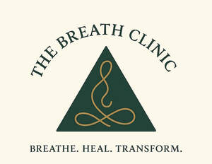

Trade Mark Journal No.2025/041 10 October 2025
UK00004269507 25 September 2025 (41,44,45)

- Class 41
- Arranging and conducting of classes; Educational services; Education services; Conducting courses, seminars and workshops; Training courses; Providing online training seminars; Arranging professional workshop and training courses; Educational seminars; Residential training courses; Conducting of educational courses; Arranging of training courses; Providing courses of training; Educational and training services; Organisation of training courses; Provision of training courses; Training courses (Provision of -); Residential education courses; Workshops for training purposes; Organisation of training seminars; Training and education services; Education and training services; Organising of educational seminars; Conducting training seminars; Education, teaching and training; Courses (Training -) relating to religious subjects; Training services; Practical training services; Courses (Training -) relating to research and development; Online education services; Planning of seminars for educational purposes; Training or education services in the field of life coaching; Providing online videos, not downloadable; Providing on-line videos, not downloadable; Providing on-line non-downloadable audio content; Providing on-line non-downloadable video content; Providing on-line publications (not downloadable); Video recordings [not downloadable] provided from the internet; Providing electronic publications [not downloadable]; Provision of non-downloadable videos; Meditation training; Teaching of meditation practices; Education services relating to meditation; Bodywork therapy instruction; Conducting workshops and seminars in self awareness; Life coaching (training); Arranging and conducting of workshops and seminars in self-awareness; Conducting workshops and seminars in personal awareness; Religious training; Personal development training; Personal development courses; Provision of training courses in personal development; Educational services relating to spiritual development; Religious education; Religious educational services; Educational services relating to religious development; Education services relating to therapeutic treatments; Health and wellness training; Self-awareness courses [instruction]; Provision of courses of instruction in self awareness; Perceptual teaching services; Training in communication techniques; Teaching services for communication skills.
- Class 44
- Meditation services; Holistic psychotherapy; Bodywork therapy; Reiki services; Health care relating to relaxation therapy; Music therapy for physical, psychological and cognitive purposes; Health spa services; Therapeutic treatment of the body; Music therapy; Therapy services.
- Class 45
- Mentoring [spiritual]; Spiritual advice; Spiritual consultancy; Astrological and spiritual services; Counselling relating to spiritual direction; Religious prayer services; Conducting religious prayer services; Religious services; Conducting religious ceremonies; Provision of personal tarot readings; Psychic consultancy; Psychic reading services; Providing emotional support to cancer patients and their families via interactive online forums; Providing personal support services for cancer patients and their families.
The Breath Clinic Limited